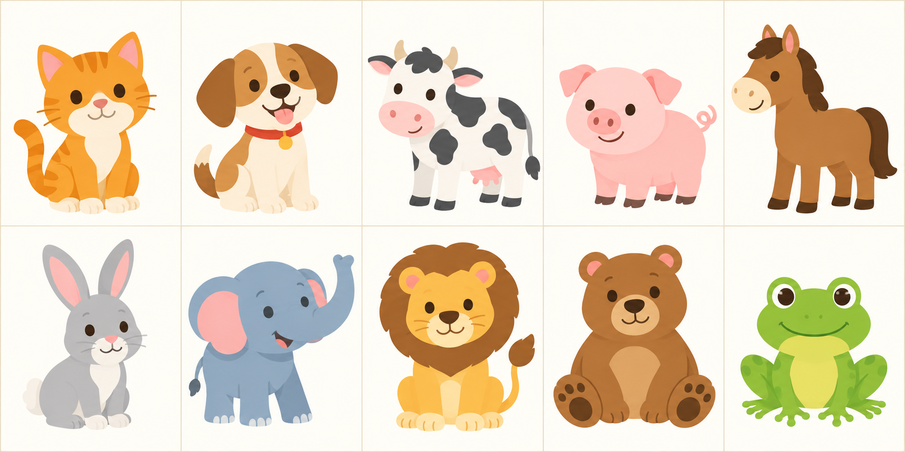
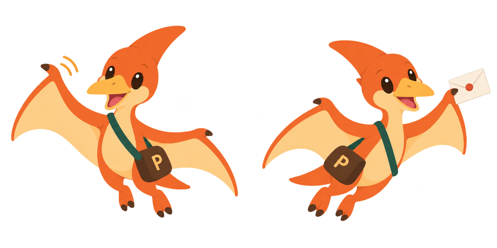
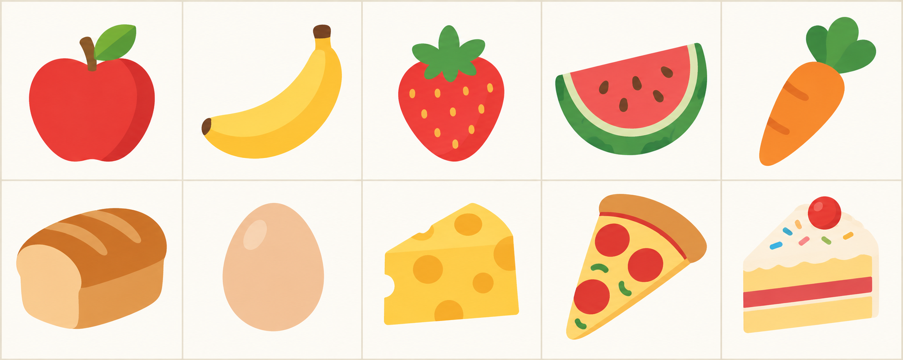
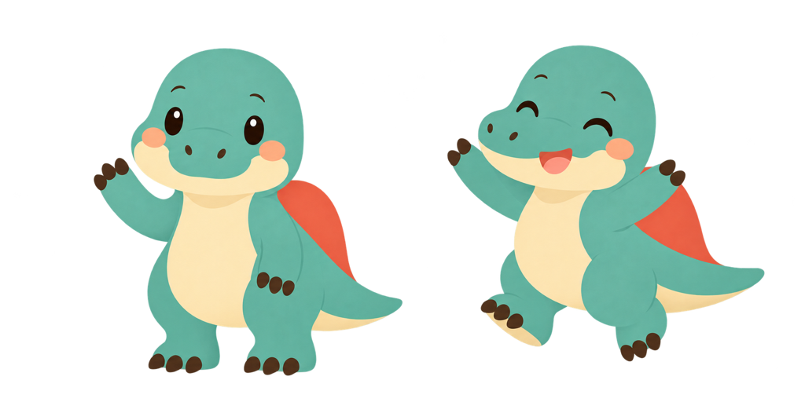
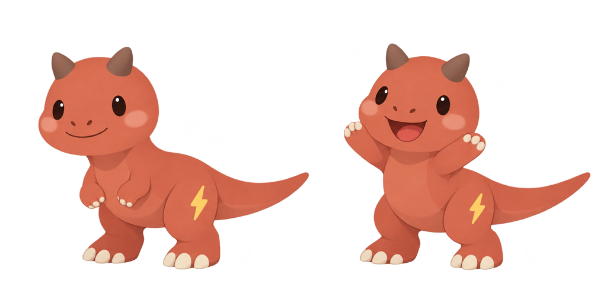
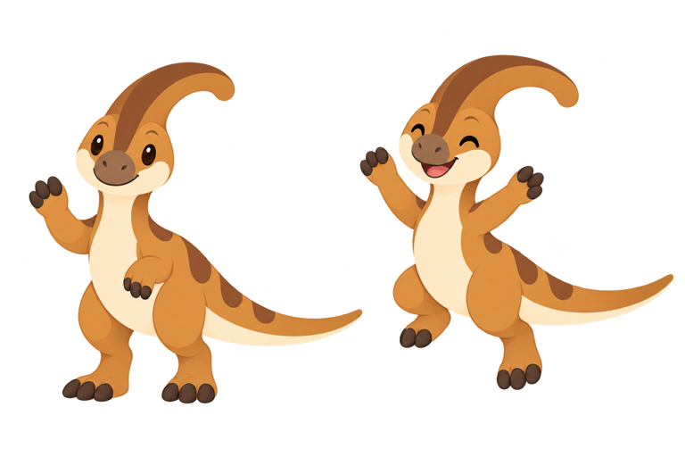
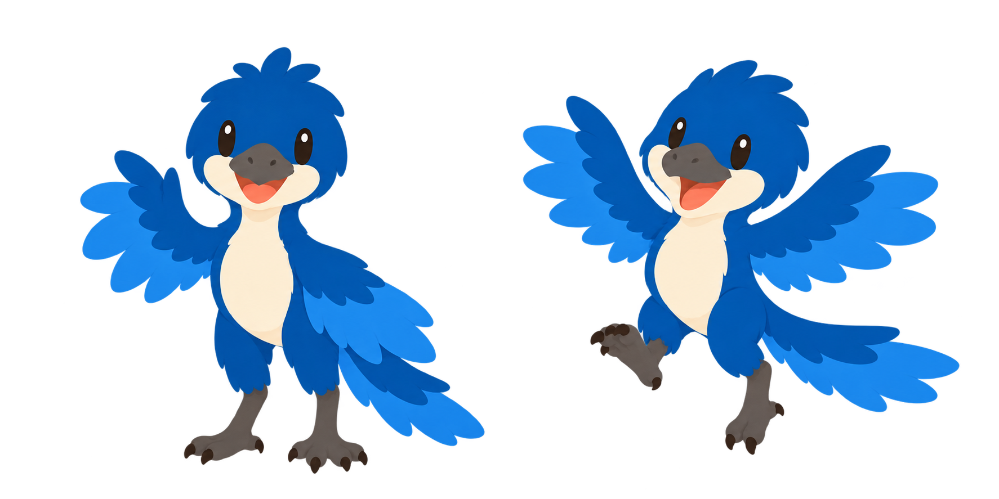
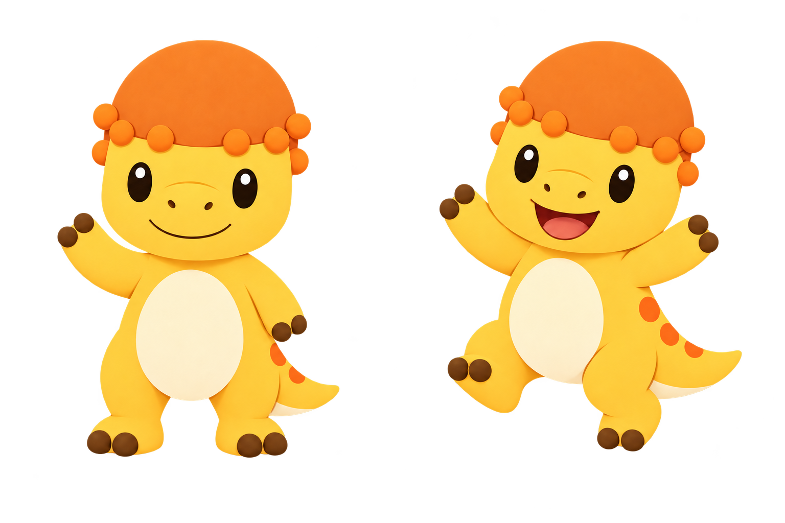
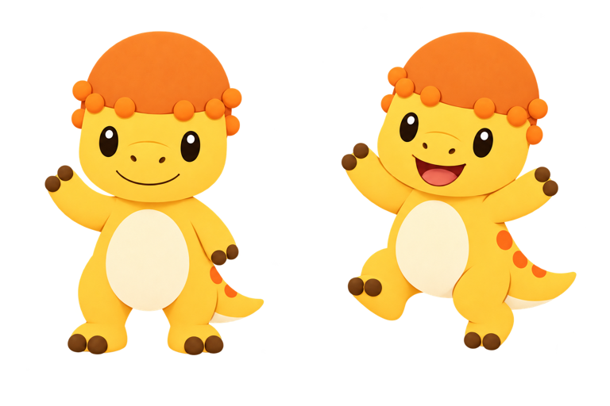

dinopost-workmark-master
1024K → 33K（97% 減少）

格子底紋代表透明背景。勾選「原尺寸」可以放大比對細節（左右捲動）。
1207K → 134K（89% 減少）

648K → 297K（55% 減少）
1024K → 33K（97% 減少）
810K → 178K（78% 減少）
618K → 281K（55% 減少）


1033K → 87K（92% 減少）

1508K → 317K（79% 減少）
970K → 80K（92% 減少）
773K → 319K（59% 減少）


1156K → 165K（86% 減少）
624K → 275K（56% 減少）

1357K → 203K（86% 減少）


694K → 311K（56% 減少）


1449K → 250K（83% 減少）

